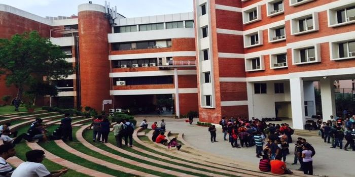

Education
International Management Institute
Graduated in 2017
The importance of management is something that I have understood since my very early professional career. In fact, I believe that an engineer that lacks effective communication and interpersonal skills is being on the wrong track. And I started to consider that business and engineering are strongly related as we can’t promote our product (even if it is perfectly done) and ‘sell’ it if we lack the ability to express, negotiate and effectively communicate. That's why, I applied for a scholarship named ITEC and I was able to join the International Management Institute in India. And, I was selected as the best participant in my promotion and won an International certificat in strategic Management for emerging markets.
National School of Engineers of Sousse
Graduated in 2015
After the high school, I was not sure about what career path to follow. But, I can still remember when I was a child, I always get excited just thinking about breaking something down. Mechatronics engineering was about barely the same thing. So I chose the National School of Engineers of Sousse, I studied mechanical courses as well as electronic courses, and I get the oppoertunity to experience new technologies such as 3D printing.